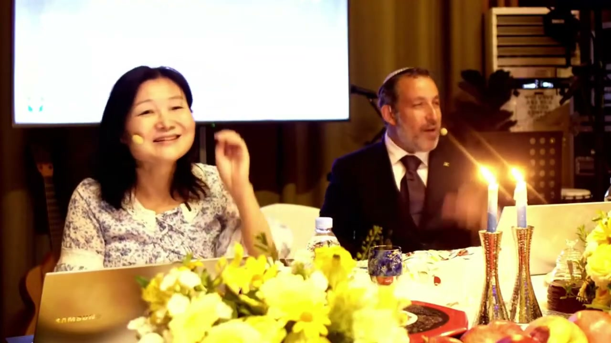

列國與這日 ── 韓國、萬民與當日的 Halacha The Nations and the Day — Korea, the Peoples, and the Halacha
在一場以韓語舉行的全球羅什哈沙拿 Seder 中段，一則關於北韓的突發消息打斷了會場。拉比由此帶出這晚教導的核心：韓國、中國、列國（goyim）在神計劃裡的位置，以及這日的 halacha ── 新年究竟要求我們做什麼？ Mid-way through a Korean-language Worldwide Rosh HaShanah Seder, a sudden report about North Korea breaks into the room. From there the teacher opens the heart of the night: the place of Korea, China, and the nations (goyim) in God's purposes, and the halacha of the day — what the New Year actually requires of us.
這是這場全球 Seder 的「教導心臟」。會場在韓國，桌上擺著為羅什哈沙拿（Rosh Hashanah，新年）預備的食物；線上同時連著中國、以及世界各地的人。就在祝福、舉杯、洗手、蘸蜜的歡樂之間，一則關於北韓、關於金正恩的突發消息傳進來。拉比沒有把它當作政治插曲帶過，而是停下來問：韓國、中國、北韓、整個列國（goyim），在神今夜所開的「書」裡，站在哪裡？接著他把整晚的教導收攏成一件事 ── 這日的 halacha（哈拉哈，實踐的教導）：新年不是看煙火，而是加冕君王、回轉、被寫進生命冊。 This is the teaching heart of the worldwide Seder. The room is in Korea; the table is laid for Rosh Hashanah, the New Year; and online, China and the rest of the world are watching live. In the middle of the blessings, the cups, the hand-washing and the honey-dipped bread, a sudden report about North Korea — about Kim Jong-un — breaks into the room. The teacher does not wave it off as a political aside. He stops and asks: Korea, China, North Korea, the whole company of nations (goyim) — where do they stand inside the “book” God is opening tonight? Then he gathers the whole evening into one thing — the halacha of the day, the practical teaching: the New Year is not about fireworks but about crowning the King, returning to Him, and being written into the Book of Life.
一、突發消息闖進會場 ── 北韓、金正恩，與「這日」I. A Breaking Report Enters the Room — North Korea, Kim Jong-un, and “This Day”
教導正在進行，會場滿了喜樂。就在這時，一則關於北韓、關於金正恩的突發消息傳了進來。對在韓國敬拜的人來說，這不是遙遠的新聞 ── 它就在邊界的另一邊。但帶領者沒有讓恐懼接管。他先把眾人帶回那句最古老的祝福：Baruch atah Adonai, Eloheinu melech ha'olam, shehecheyanu v'kiyemanu v'higiyanu lazman hazeh ──「主、我們的神、宇宙的王，是應當稱頌的；祢使我們存活、扶持我們、領我們到了這個時刻。」 The teaching is underway and the room is full of joy. At that moment a sudden report about North Korea — about Kim Jong-un — comes in. For people worshipping in Korea this is not distant news; it is right across the border. But the leader does not let fear take over. He brings everyone back to the oldest blessing first: Baruch atah Adonai, Eloheinu melech ha'olam, shehecheyanu v'kiyemanu v'higiyanu lazman hazeh — “Blessed are You, LORD our God, King of the universe, who has kept us alive, sustained us, and brought us to this season.”
這句 שֶׁהֶחֱיָנוּ shehecheyanu 的根意是「使我們存活」。在一則關於核武鄰邦的消息正壓在心頭時，帶領者選擇先宣告：我們還活著，我們被扶持，我們被領到了今天。會場裡、線上的中國、世界各地的人，一同被邀請祈求「復活」── 身體的、心思的、靈的復活。新聞報的是死亡的陰影；這日宣告的是生命的王。 The root of שֶׁהֶחֱיָנוּ shehecheyanu is “He has kept us alive.” With a report about a nuclear-armed neighbour pressing on every heart, the leader chooses to declare first: we are still alive, we are sustained, we have been brought to this day. The room, the believers online in China, people everywhere, are all invited to ask for “resurrection” — of body, of mind, of spirit. The news speaks of the shadow of death; this day proclaims the King of life.
二、這日的 Halacha ── 加冕君王II. The Halacha of the Day — Crown the King
帶領者直接點出這日的 הֲלָכָה halachah（哈拉哈，實踐的教導）：羅什哈沙拿（רֹאשׁ הַשָּׁנָה Rosh Hashanah，新年）最大的 mitzvah（誡命），就是承認祂為王。每一樣擺在桌上的東西，都是一個 siman（記號），指向同一件事 ── 君王。有王，就有國度。先承認誰是王，其餘一切才有了次序。 The leader names the הֲלָכָה halachah of the day plainly: the greatest mitzvah of רֹאשׁ הַשָּׁנָה Rosh Hashanah is to acknowledge Him as King. Every item on the table is a siman, a sign, pointing to one thing — the King. Where there is a King, there is a Kingdom. Acknowledge who is King first, and everything else falls into order.
猶太傳統教導：羅什哈沙拿若不誦讀那句宣告王權的話，就不算正確地守了這日。於是會眾一同呼喊：「Adonai melech, Adonai malach, Adonai yimloch l'olam va'ed」 ──「主作王、主已經作王、主必作王，直到永永遠遠。」這不是一句口號，而是把心的次序重新排正：在金正恩之上、在列國的領袖之上、在每一則新聞之上，主作王。 Jewish tradition teaches that if one does not recite the proclamation of God's kingship, one has not properly kept Rosh Hashanah. So the congregation cries out together: “Adonai melech, Adonai malach, Adonai yimloch l'olam va'ed” — “The LORD is King, the LORD was King, the LORD shall reign forever and ever.” It is not a slogan but a reordering of the heart: above Kim Jong-un, above the rulers of the nations, above every headline — the LORD reigns.
三、三本書打開了 ── 你被寫在哪一本？III. Three Books Are Opened — In Which One Are You Written?
傳統說，羅什哈沙拿這日，天上有三本書被打開：義人之書（Sefer haTzadikim）、惡人之書（Sefer haResha'im）、以及中間之人之書。在這黑暗的時刻，帶領者邀請眾人彼此對望、彼此祝願：願你被寫進生命冊，被寫進義人之書。 Tradition says that on Rosh Hashanah three books are opened in heaven: the Book of the Righteous (Sefer haTzadikim), the Book of the Wicked (Sefer haResha'im), and the Book of those in between. In this dark hour, the leader invites everyone to look into one another's eyes and bless one another: may you be written into the Book of Life, into the Book of the Righteous.
「L'shanah tovah tikatevu v'tichatemu — b'Yeshua haMashiach。」──願你被記下、被印上，在彌賽亞耶書亞裡，得著美好的一年。 “L'shanah tovah tikatevu v'tichatemu — b'Yeshua haMashiach.”— May you be inscribed and sealed for a good year, in Yeshua the Messiah.
帶領者強調：人怎樣被寫進義人之書？是藉著彌賽亞的靈。今天連你的行動都能使你被記在生命冊上 ── 但有一個行動是不能少的，傳統把它公正地定義為 teshuvah。線上同看的每一個人，也都被包進這份祝願裡：願所有的人都被記在生命冊上。 The leader stresses: how is one written into the Book of the Righteous? Through the spirit of the Messiah. Today even your deeds can write you into the Book of Life — but there is one act that cannot be missing, the one tradition defines squarely as teshuvah. Everyone watching online is folded into the same blessing: may all be written into the Book of Life.
四、Teshuvah ── 回轉的日子，永不嫌晚IV. Teshuvah — A Day of Return, Never Too Late
這日要求的那一個行動，就是 תְּשׁוּבָה teshuvah ── 回轉、歸向祂。傳統把三件事放在禱告裡：teshuvah（回轉）、tefillah（禱告）、tzedakah（施捨／公義）。帶領者當場呼籲眾人 ── 包括線上的人 ── 向以色列獻上 tzedakah，因為這是今天得「功德」（zechut）的途徑之一。 The one act this day demands is תְּשׁוּבָה teshuvah — to turn, to return to Him. Tradition sets three things into the prayer: teshuvah (return), tefillah (prayer), and tzedakah (charity / righteousness). The leader calls on everyone there — and online — to send tzedakah to Israel, because it is one of the ways one acquires zechut, merit, today.
然後是這晚最溫柔的一段。帶領者引用雅歌的話：「我屬我的良人，我的良人也屬我」── 希伯來文「Ani l'dodi v'dodi li」，傳統說 Elul（以祿月）四字正是這句話的縮寫。他對每一個覺得「我太遲了、我陷得太深、我走得太遠回不來了」的人說：不。回轉永遠不嫌晚。撒但會謊稱「你完了」，但這日宣告的是 ── 歸回你的良人。 Then comes the tenderest moment of the night. The leader cites the Song of Songs: “I am my Beloved's and my Beloved is mine” — the Hebrew Ani l'dodi v'dodi li, whose initial letters, tradition says, spell Elul. To everyone who feels “I am too late, I am in too deep, I have wandered too far to return,” he says: No. It is never too late to return. The satan whispers “you are finished,” but this day declares — return to your Beloved.
五、Simcha ── 喜樂是被命令的，神也親自供應V. Simcha — Joy Is Commanded, and God Provides
進入 Yom（審判之日）本是嚴肅的；但按塞法迪傳統會讀民數記 10:10，把這日也守為 simchat（喜樂）。帶領者點出一個美麗的字謎：שִׂמְחָה simcha（喜樂）的字根是 sameach；把這幾個字母重組，就拼出 Mashiach（彌賽亞）。在彌賽亞裡的人，理當成為「喜樂的人」（sameach）。沒有進入喜樂，就不算真正守了這節期。 Entering Yom, the day of judgment, is solemn; yet the Sephardic tradition reads Numbers 10:10 and keeps the day also as simchat, joy. The leader points to a beautiful wordplay: the root of שִׂמְחָה simcha (joy) is sameach; rearrange the letters and you spell Mashiach, Messiah. Those in the Messiah are meant to be people of joy (sameach). Without entering joy, one has not truly kept the feast.
他要眾人看一看眼前 ── 這美好的場地，是神所供應的；中國的群體此刻聚在一間猶太餐廳裡，也是神的供應；線上敬拜的人「非常安全，因為神在保護你們」。神不只釋放喜樂，祂也供應一切。所以「快快喝杯酒吧！因為這是神為我們預備的」。連韓國人的「效率」、韓國的水、韓國的不知火（醬料）與美食，都被收進這份對供應者的感恩。 He has everyone look around — this beautiful venue is God's provision; the community in China gathered tonight in a Jewish restaurant is God's provision; those worshipping online are “very safe, because God is protecting you.” God does not only release joy, He provides everything. So, “drink your wine quickly! — because God has provided it for us.” Even Korean “efficiency,” Korean water, the Korean food and sauces are gathered into thanksgiving to the Provider.
六、Kiddush 與洗手 ── 進入五檔，攻擊撒但VI. Kiddush and the Washing — Shift Into Fifth Gear, Attack the Satan
舉杯 Kiddush（祝聖）時要站著。帶領者把酒杯舉在右手裡，連線到耶書亞的話：「我是真葡萄樹，你們是枝子。」神給了我們葡萄樹 ── 不要忘記祂在你生命中所賜下的。接著是 netilat yadayim（洗手禮）。帶領者把它解釋為一個屬靈的圖畫：羅什哈沙拿是你攻擊撒但的日子，不是撒但攻擊你的日子。 For Kiddush one stands. The leader lifts the cup in his right hand and connects it to Yeshua's words: “I am the true vine; you are the branches.” God has given us the vine — do not forget what He has given in your life. Then comes netilat yadayim, the washing of hands. The leader reads it as a spiritual picture: Rosh Hashanah is the day you attack the satan, not the day the satan attacks you.
他用一個在首爾開車的比喻：神造你是「五檔」的，但前方交通堵塞，yetzer hara（惡的傾向）設下障礙、繞你的路、攪亂你，逼你只能掛三檔慢爬。洗手代表我們的渴望（ratzon，意志）：求神把前面的路清乾淨，「我要掛五檔走」。當撒但聽見羊角號（shofar）的聲音 ── 那聲音提醒他彌賽亞的號角 ── 他就逃跑。所以這日，我們主動攻擊撒但。 He uses a driving-in-Seoul image: God made you for “fifth gear,” but the road ahead is jammed; yetzer hara (the evil inclination) sets obstacles, reroutes you, confuses you, forcing you to crawl in third. The washing represents our desire (ratzon, the will): asking God to clear the road ahead — “I want to go in fifth gear.” When the satan hears the shofar — reminded of the Messiah's trumpet — he flees. So on this day, we go on the offensive against the satan.
七、桌上的記號 ── 蜜、蘋果、石榴與大蔥VII. Signs on the Table — Honey, Apple, Pomegranate, and the Leek
孩子們被請上前 ── 因為這晚的一個目的，是「預備韓國的下一代」。然後是桌上的 simanim（記號）。圓形的 challah（哈拉麵包）是圓的，因為我們相信主必再來；蘸蜜而食，求新的一年甘甜。接著拿起蘋果蘸蜜 ── 帶領者教導，按 Arizal，蘋果代表 Shechinah（神的同在）；蜜的甘甜對應一個特別的禱告：hamtakat halashon，「舌頭的甘甜」。 The children are called forward — because one aim of this night is to “prepare the next generation of Korea.” Then come the simanim on the table. The round challah is round because we believe the Lord is returning; dipped in honey, we ask for a sweet year. Then the apple in honey — the leader teaches that, per the Arizal, the apple represents the Shechinah, God's presence; and the sweetness of honey answers a particular prayer: hamtakat halashon, “the sweetening of the tongue.”
撒但最常從哪裡攻擊？從我們的口。我們所說的話會「成真」── 希伯來文裡「字母」（otiyot）與「事物」（otzar）相連：你的話能拆毀諸天，也能建造諸天。所以這日我們向 Hashem 求戰勝一個罪 ── lashon hara（惡言、毀謗）。把蜜加在舌頭上，意思是：今年只說造就人的話、只說甘甜正面的話。「我天生就是個負面的人，怎麼可能？」── 正因如此，我們才需要蘋果（Shechinah）來改變我們的口。 Where does the satan attack most? At our mouth. What we say becomes “real” — in Hebrew the “letters” (otiyot) and “things” are linked: your words can tear down heaven or build heaven. So this day we ask Hashem to overcome one sin — lashon hara, evil speech, slander. Putting honey on the tongue means: this year I will speak only words that build, only sweet and positive words. “But I am a negative person by nature — how can I?” — precisely why we need the apple, the Shechinah, to change our mouth.
蘋果與石榴有什麼共通點？不是顏色，不是酸甜 ── 是裡面都有「種子」。整個 Seder 表面是歡笑，但它的秘密藏在「種子」裡（這個奧秘留待次日展開）。傳統上也會吃酸蘋果，因為生命裡有酸澀；功課是在酸澀之中仍去尋見甘甜。最後，桌上那樣綠色的東西 ── 韓語叫「파」（pa，大蔥／韭蔥）── 是不吃的：它代表我們終極的仇敵（haSatan / yetzer hara），是要被斬斷的。每一樣擺在你面前的食材都有名字；這是一場屬靈的征戰。 What do apple and pomegranate share? Not colour, not sweet or sour — both have “seeds” inside. The whole Seder looks like laughter on the surface, but its secret is hidden in the seeds (a mystery left for the next day). Tradition also eats a sour apple, because life has sourness; the lesson is to find sweetness even in the sour. Finally, the green thing on the table — in Korean “파” (pa, leek/scallion) — is not eaten: it represents our ultimate enemy (haSatan / yetzer hara), to be cut off. Every item before you has a name; this is spiritual warfare.
八、Brit Hadashah ── 新的一年，新的心，新的約VIII. Brit Hadashah — A New Year, a New Heart, a New Covenant
能真正改變我們嘴唇的，是我們的心。所以我們向主求一顆新心。這日所讀的經文之一是耶利米書 31 ── 它所應許的，正是 Brit Hadashah（新約／新年的約）。帶領者邀請眾人：今天就進入 Brit Hadashah。當你求 hamtakat halashon（舌頭的甘甜），你就會用全新的眼光看世界 ── 看人不再先看缺乏，而先看那份正面與恩典。 What can truly change our lips is our heart. So we ask the Lord for a new heart. One of the portions read this day is Jeremiah 31 — and what it promises is the Brit Hadashah, the New Covenant (and the covenant of the new year). The leader invites everyone: enter the Brit Hadashah today. When you ask for hamtakat halashon, the sweetening of the tongue, you will see the world in a new way — looking at others no longer for their lack first, but for the positive and the grace first.
蘋果、蜜、甘甜 ── 把「審判」變成「甘甜」。蘸第二口，相信你此刻正進入這新的約。「神豈不是太良善了嗎？」帶領者問。能進入這甘甜的唯一途徑，就是進入新約。會眾舉手回應：我們今天就要這新的約。 Apple, honey, sweetness — turning “judgment” into “sweetness.” Dip a second time and believe you are entering this new covenant now. “Is God not too good?” the leader asks. The only way into this sweetness is to enter the New Covenant. The congregation raises their hands in answer: we want this new covenant today.
九、列國與這日 ── 韓國、中國，與下一代IX. The Nations and the Day — Korea, China, and the Next Generation
把這晚收攏起來：列國並不在神的計劃之外。會場在韓國，線上連著中國，世界各地的人同守這日。帶領者反覆說的兩件事極其關鍵 ── 第一，這晚是要「預備韓國的下一代」，孩子們親手參與哈拉、親口跟著祝福，因為他們就是下一代；第二，線上同看的人「非常安全，因為神在保護你們」。當北韓的陰影壓下來時，這日宣告的不是政治分析，而是：神作王、神供應、神保護、神回轉祂的百姓。 Gathering the night together: the nations are not outside God's plan. The room is in Korea, China is online, people everywhere keep this day. Two things the leader repeats are crucial — first, this night is to “prepare the next generation of Korea,” the children taking the challah with their own hands and following the blessings with their own mouths, because they are the next generation; second, those online are “very safe, because God is protecting you.” When the shadow of North Korea presses in, this day proclaims not political analysis but: God reigns, God provides, God protects, God restores His people.
所以韓國、中國、北韓 ── 萬民（גּוֹיִם goyim，「列國」）── 都被擺在同一張桌前，被同一份呼召觸及：加冕君王，回轉，進入喜樂，攻擊撒但，守住舌頭，進入新約，並把這信仰交給下一代。新聞會變；金正恩會起會落；列國會動盪。但這日的 halacha 不變 ── 「Adonai melech, Adonai malach, Adonai yimloch l'olam va'ed」。 So Korea, China, North Korea — all the peoples (גּוֹיִם goyim, “the nations”) — are set at the same table, reached by the same call: crown the King, return, enter joy, attack the satan, guard the tongue, enter the New Covenant, and hand this faith to the next generation. The news will change; Kim Jong-un will rise and fall; the nations will shake. But the halacha of this day does not change — “Adonai melech, Adonai malach, Adonai yimloch l'olam va'ed.”
關於分辨A Word on Discernment
這場 Seder 帶著濃厚的口傳氣息：字謎、字根的連結（如 simcha 與 Mashiach、Elul 的縮寫）屬於 drash（講解、靈意），而非每處都是 p'shat（字面義）。它們是傳統的記憶手法，幫助人記住教導，不應被讀成嚴格的語源學。同樣，把蘋果定為 Shechinah、把大蔥定為仇敵，是卡巴拉與節期傳統的象徵讀法，是提醒的記號，不是教義的根基。 This Seder carries a strong oral-teaching flavour: the wordplays and root-links (such as simcha and Mashiach, or the Elul acronym) belong to drash — homiletic, devotional reading — not in every case to p'shat, the plain sense. They are traditional memory devices to help people hold the teaching, and should not be read as strict etymology. Likewise, assigning the apple to the Shechinah and the leek to the enemy is symbolic, kabbalistic-and-festival reading — a reminder-sign, not a doctrinal foundation.
話雖如此，這晚的骨幹卻是穩固的：羅什哈沙拿要加冕君王、要 teshuvah 回轉、求被寫進生命冊、守住舌頭、進入喜樂 ── 這些都是這日 halacha 的核心。而那則北韓的消息所教的，也是最簡單卻最真實的：當列國震動時，神的百姓先回到祂的王權之下。 That said, the backbone of the night is solid: Rosh Hashanah is to crown the King, to make teshuvah, to ask to be written into the Book of Life, to guard the tongue, to enter joy — these are the heart of the day's halacha. And what the North Korea report teaches is the simplest and truest thing of all: when the nations shake, God's people return first to His kingship.
結語 ── 從這日到全地Closing — From This Day to All the Earth
「主、我們的神、宇宙的王，是應當稱頌的；祢使我們存活、扶持我們、領我們到了這個時刻。今夜，韓國、中國、列國同坐一桌：我們加冕君王，我們回轉，我們進入新的約。願所有的人 ── 在會場的、在線上的、在每一道門後的 ── 都被寫進生命冊。Adonai melech, Adonai malach, Adonai yimloch l'olam va'ed。」 “Blessed are You, LORD our God, King of the universe, who has kept us alive, sustained us, and brought us to this season. Tonight Korea, China, and the nations sit at one table: we crown the King, we return, we enter the New Covenant. May all — in the room, online, behind every gate — be written into the Book of Life. Adonai melech, Adonai malach, Adonai yimloch l'olam va'ed.”